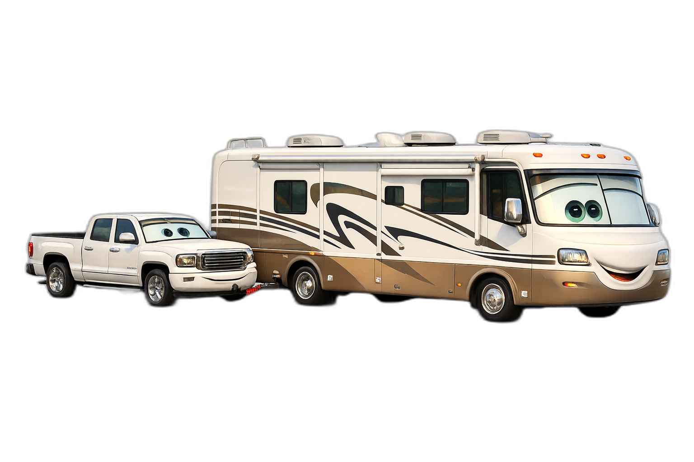

★ ★ ★
July 11 - 26, 2025
Out
West
Knoxville, TN • 7 National Parks • 16 Days
★ ★ ★

Monaco Cayman 36PDQ — Trip Fuel Estimate
5,500
Est. Miles
~611
Gallons
~$2,005
Fuel Cost
675 mi
Tank Range
RV SPECS: 12 ft tall • 36 ft long • 75 gal tank • 8-10 mpg
Sequoia: CA-198 ONLY (22 ft limit on Generals Hwy). Zion Canyon: NO RVs. Monument Valley loop: dirt, skip it. Tioga Pass CA-120 East: NO. UT-12: NO.